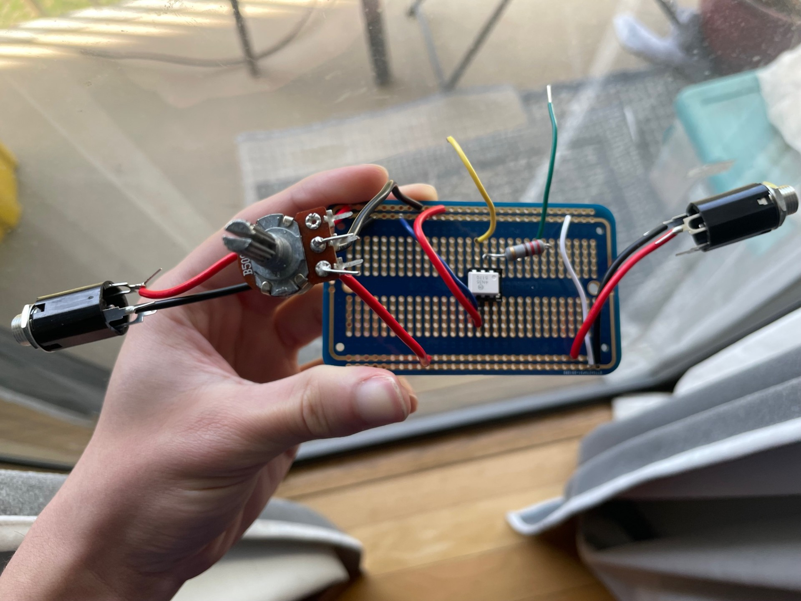

The circuit works by periodically shorting the guitar signal to ground, this immediately stops the signal from going to the output and results in a complete cut in sound, then it stops shorting it to ground and lets the guitar signal go to the output overall resulting in a stuttering effect. 2 main circuits were required to do this: the 555 timer circuit generates a square wave with an amplitude of around 5 volts the potentiometer also adjusts the frequency of the square wave; if the circuit was hooked up to an LED it would blink repeatedly, the optocoupler circuit does the actual shorting; when the optocoupler has the 5 volts delivered to the input pin it would connect the ground to the signal completely shorting it.

